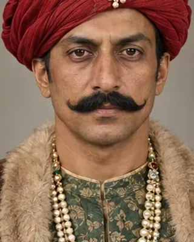

1629–1688 · Mughal general

Led the 1667–1671 Mughal invasion of Assam; defeated at Saraighat in 1671 and demoted on his return.
Record confidence: high.
Open interactive profile
August 1669
March 1671